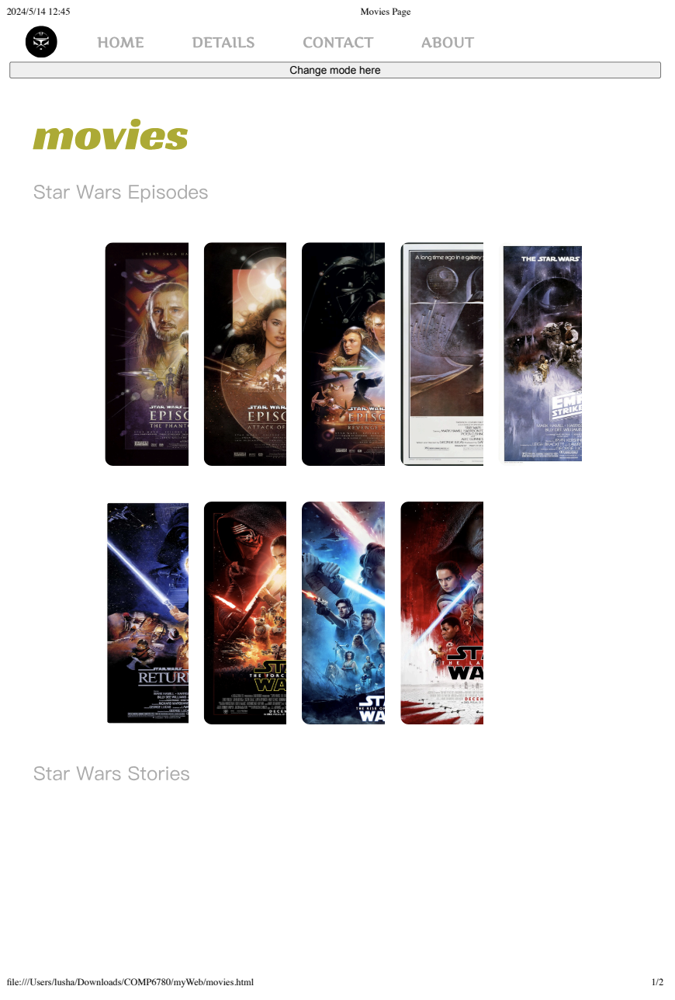
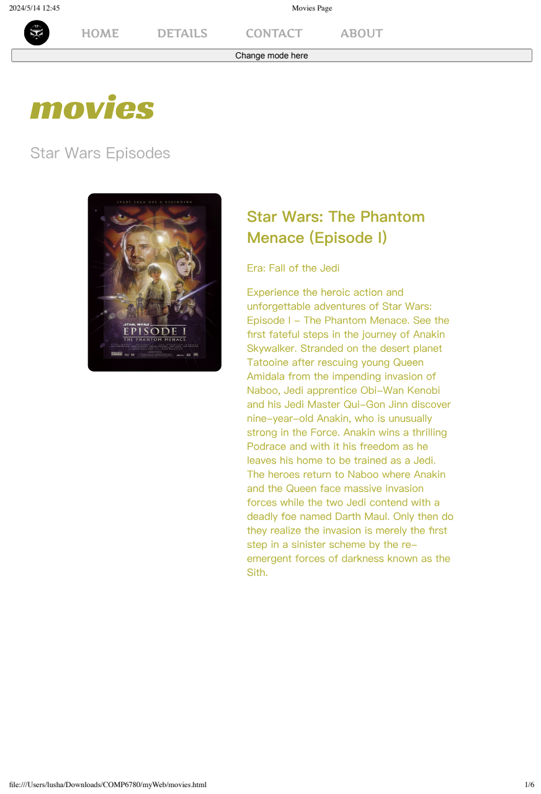
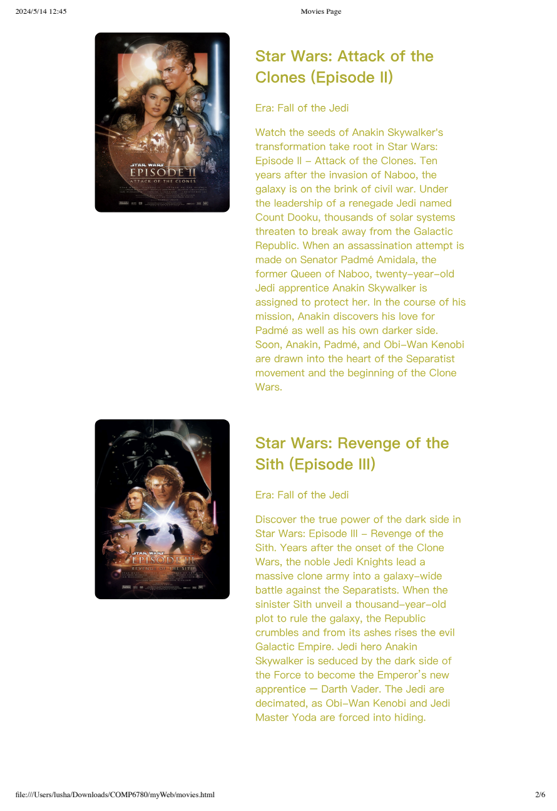
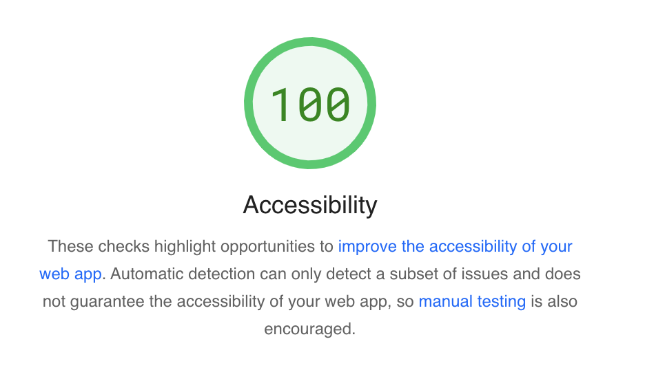

This page is the marking guide to your website that your tutor will use to find your elements. Do not name this page anything other than assignment.html (all lower case) or else we may not be able to find and mark your assignment elements. How to use this page:
My chosen topic "Star Wars", I want to introduce something in the movie "Star Wars".
Note: You will not be able to change this topic in the future.
Notes: Provide any notes you may have about this element here.
Notes: Provide any notes you may have about this element here.
Notes: Provide any notes you may have about this element here.
Notes: Provide any notes you may have about this element here.
Notes: Provide any notes you may have about this element here.
Notes: Provide any notes you may have about this element here.
Primary CTA:
Home PageSecondary CTA:
Movies PageNotes: For primary CTA, I put it on my home page (index.html), after animation, there is a "explore" button to explore the Star Wars universe, which is the topic of this website.
For Secondary CTA, I put it on the bottom movies page (which can be accessed from home page (index.html)) -- there is a explore gallery button, directing to gallery.
Notes: Images in gallery can be expanded by clicking the image, and there are left and right arrow to go to the prev / next image. Close button also attached at right-top corner.
I am doing Javascript, with following files.
galleryPageJs.jsNotes: Provide any notes you may have about this element here.
Notes: Provide any notes you may have about this element here.
Notes: Reflection attached under the Original about me page.
Notes: My Alternative css file is to make the web into a more printer friendly mode.
Notes: As observed on my movie page, movie information only pops up when the mouse hovers over the corresponding movie image. When the mouse leaves that specific image —and not the corresponding movie info— the information folds away. This method presents a well-designed page but is not printer-friendly. (Figure 1) Figure 1 illustrates that when printing the website in its original mode (referred to as dark mode because of the website's dark theme), the movie information is hidden, and the format appears disorganized. However, switching to a printer-friendly mode (light mode) using the button results in a perfect output, as shown in Figures 2 and 3. Additionally, this mode allows the website to appear more concise and clean.
  Figure 1 Printing Result with Dark mode Figure 2 Printing Result with light mode 1 Figure 3 Printing Result with light mode 2
Notes: I choose the implement Social Networking Button(s) for this part. I put Weibo, Facebook, Twitter (X) share button on the right top side of the movie website. When clicking, it will lead us to the share page of corresponding social media. i.e. Share link with description if applicable.
Replace this line with your URL link to this element in your website.
Acoording to google's LightHouse I have 100 accessibility for almost all my website page. (all website accessibility > 95)
Figure: accessibility Image
Notes: For the following requirements:
• All media has a descriptive alternative text: I make sure that every image have an alt element.
• Proper Headings structure is used. I am using proper h1-h6 headings and also design my own headings font size using css file, etc.
• All icon sizes are at least 45 x 45 pixels: The smallest images in my website are top-left logo, contact icon and share button icons. I have set scales of all of them to at least 45*45 pixel. (which could observed from default.css ".header-content img")
• All site elements are accessible using the tab key on your keyboard: All elements are clickable in my website, and could be directed next or prev using tab
• All href links have an aria-label associated with them: I have add aria-label for every href links.
• Abbreviations in content have an abbr tag associated with them:I do not have abbr in my website assignment.
Notes: I put all html and css validation image to this page. All come with no errors.
I made helpButton.js which generates a help button for every pages. When Clicking this help button, three additional buttons "More","Main","Top" buttons pops up in which: More button leads to StarWars official website. Main button leads to my index home page. Top button leads to top of current website. (p.s. Top button will check if user is currently at the top and change the opacity accordingly.) When click that help button again, the three additional buttons will be folded. All of the buttons are accessible from tab key.
I try to make the website functional with every minor aspects. For example, I create mode.js to manage the gallery modal control, i.e. one could now use left, right arrow and esc to control the image. Additionally, I make significant changes on galleryPageJs.js to make the images format in an interesting way.
I wrote toTop.js to have scrolling up animation from end to the top of website in Movies Page and About me Page.
I wrote dropDown.js for controlling tab controll in all drop down menu.
Notes: Provide any notes you may have about this element here.
Replace this line with the CI activity you did or, if you attended the in-lab continuous improvement session, please give the date you attended the continuous improvement session.